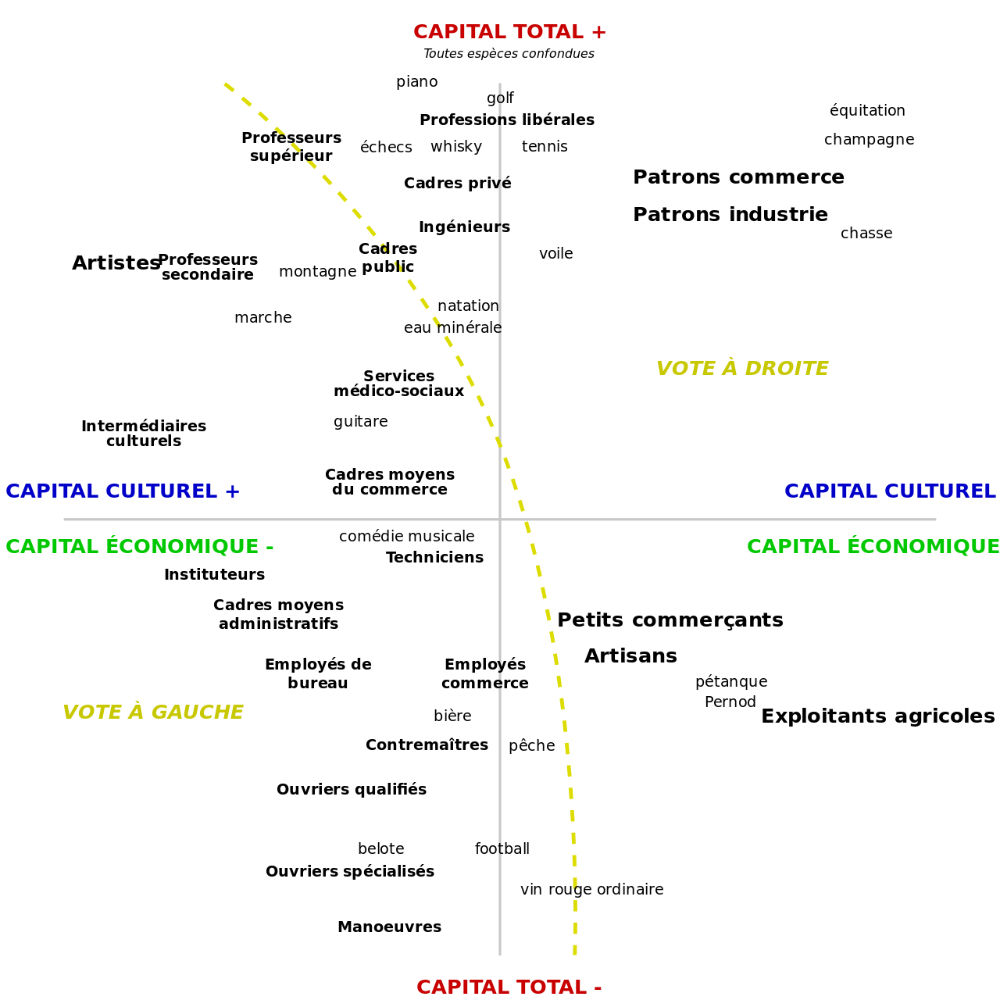

publics and users
homework review
1. present your concepts
2. we'll form groups of 2 or 3
3. work on a clear and brief design plan
adventure concepts
-- TV CAT
TV emergency
Surrealist investigation of politics
Alerts on the phone / interruption
AMBER Alert
Nuclear Bomb
-- SYSTEMS
hurting people / fighting back
animating to show fighting back/highlight the distress
-- CONTEXT
put the artworks back into context
brand logos, take them back into the objects they belong with
-- BRANDS LOGO
logos and art both self-referential
insert the brand logo on top of it
messages would pop up?
associating the user with the brand?
-- GENITALS
social commentary vs. playfulness
it's about size / phallic symbols
-- SEXUALITY
overpower vs. sexualization
game to tap away layers and display implications of the images
add to the piece and not cover it
-- SOUNDS
to highlight the commentary
-- DEFINITIONS
of the images and signs
with text (more realistic)
including footnotes etc.
-- HUMOR GAME
overwhelming nature of content
tap people away
fun until it's not overwhelming
-- PLAYER INPUT
gilad / ava / shalini
tony / shalini / gilad / ivory /angelica / hoya / ava
angelica / spencer / sammy / mar / ava
sammy / angelica / tony / ivory
tony / mar / gilad / sammy / hoya / angelica / ava
hoya / ivory / shalini
angelica / ivory / sammy / hoya
angelica
spencer
ava
tony
shalini
gilad
mar
ivory
hoya
sree
sammy
recap
- we've talked about objects in museums and galleries
- about spaces in museums and galleries
- but we haven't talked about the people there
museums and their publics
why do you go to museums?
who do you imagine/see going to museums?
- aesthetically pleasing
- good outing
- see unique pieces
- inspiring (as an artist)
- history museums (interested in the topic)
- educational aspect
- indoors
- get a feel of a place
- get the narrative of events in a certain city
- get educated in art
- "go to some museums"?
- cultural experiences
saying something
publics and counterpublics
and when you enter a museum, you become part of a public
michael warner - what is a public?
- publics are very abstract
- publics are assumed
- and then publics are identifed
- who is in the public?
tone of the discourse
discourses
a discourse is a set of statements presented as truth by a speaker, towards a receiver, and about a given theme/topic/subject/object.
can you give examples of discourses?
given
receivers
- political discourses
- tweets you don't reply to
- slogans: political and commercial
you are speaking to a pre-made public on twitter
the creation of publics
a public is created by a discourse
and by social relations (strangers with a common point)
through deliberate attention (as opposed to a crowd)
within a given situation (time and/or place)
public and a crowd
timeless
are marchers a public or a crowd?
the public sphere
the public sphere is "a virtual or imaginary community which does not necessarily exist in any identifiable space" and in which private persons discuss about public matters. - jurgen habermas
the public sphere has been the dominant way to think about publics from a national point of view.
the public sphere is a singular term, it assumes the unicity of the public in modern democratic societies
the publics of museums
what are the museums' publics?
how are they created?
education and aesthetics
and curiosity
once they are within the museum?
outside? they are getting ticket, being interested
the creation of culture
"the museum is important for those who go there, insofar as it allows them to distinguish themselves from those who do not go there." -pierre bourdieu
taste acquired socially vs. individualization
educational elitism
state nobility
pressure to be part of a discourse and be able to participate
be able to see something and participate vs. not participating
the judgement of taste
bourdieu notes a distinction between legitimate and non-legitimate culture, which acts as a social marker.
what does legitimate culture look like? what does non-legitimate culture look like?
how does that happen? what are the actors responsible for such a phenomenon?
consuming culture
what does bourdieu mean by consumption of culture?
cultural capital

you can communicate your cultural capital by saying you've gone the museum
laborers of culture
so museums can see their publics as reinforcements of their statements.
publics create cultural values for museums. the act of looking, of looking according to a particular way, creates value.
hito steyerl - is a museum a factory?
documenta 11
- why should you see everything?
a cohesive whole to be experienced the way it was intended
a message
public space and fragmented screens
multiple screens break up the theoretical "public sphere". they turn a public into a multiplicity, into a crowd.
we get overloaded instead of focused: is it inherent to us, or to our apps?
right now it's overloaded
it's not inherent
the possibility to look at something else
creating counterpublics
a museum vs. a gallery vs. a project space
the dominant discourse of the art world is, in a way, creating counterpublics, individuals who do not consider themselves included in such a discourse.
but art spaces can also offer a place for counterpublics to become publics.
digital publics
the digital medium enters the scene of both creating publics and counterpublics.
do screens tend to fracture or allow for expression?
how does bringing in digital technologies change this organization of publics and/or discourses?
communication
alternatives
interactivity
- people are not used to giving their opinions in museums
- notifications
- texts
- surveys
- what do you expect them to do?
- what experience do you want them to have?
augmented publics
if augmented reality allows you to put something out into the world, what are you putting, and how does it relate to the existing context?
thinking about:
- what you are augmenting
- where you are augmenting it
- to whom you are presenting that augmentation
break
10'
unity - namespaces
a namescape is like an additional dictionary, which allow you to use more keywords when you code.
to use a namespace, you need to write at the top of your script `using NAMESPACE;`
so in order to use functions and variables related to UI, you would write `using UnityEngine.UI;`
unity - scenes
scenes are containers for different aspects of your app
they are files that end with `.unity`
so far, we've mostly used `UnityARKitScene.unity`
to create a new scene, `File > New Scene...`
unity - switching between scenes
add your scene in File > Build Settings > Add Open Scene
and include it by making sure it is ticked.
and in your code: `SceneManager.LoadScene("name of scene")
unity - animations
Window > Animation... then select your GameObject and click `Create`
to trigger an animation, you would call `GetComponent<Animator>().Play("nameOfAnimation")`
unity - exercise
1- create a new project with two scenes.
2- on the first scene, have a button that loads the second scene.
3- when the second scene is loaded, a sphere automatically expands.